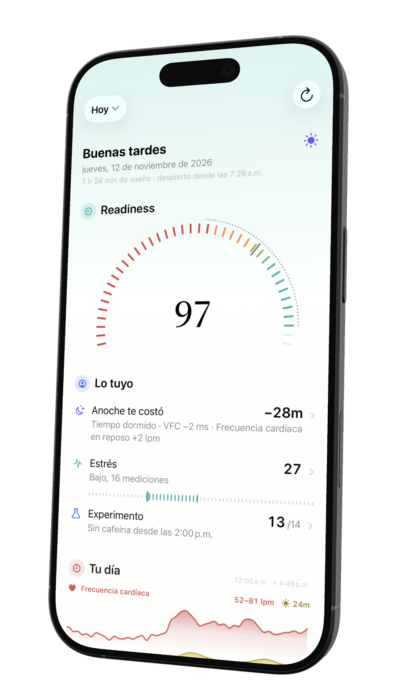
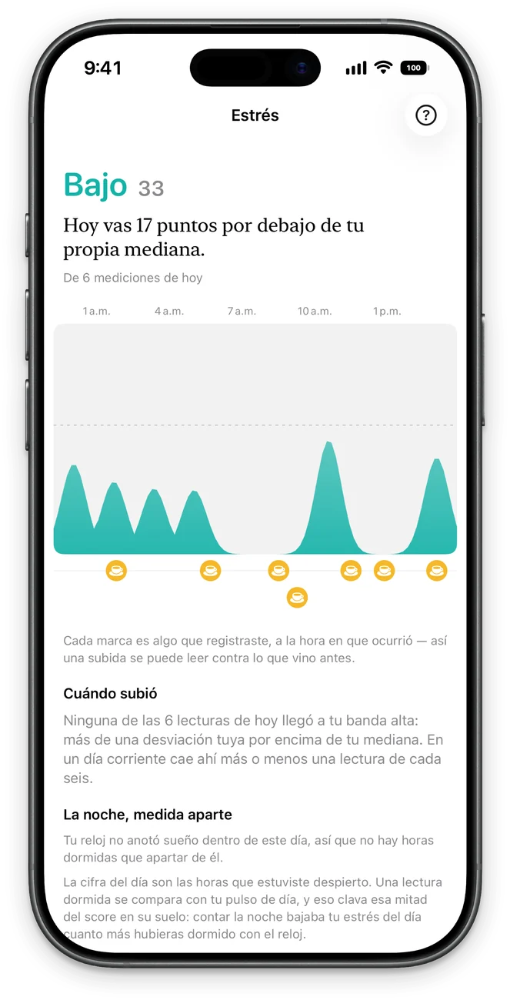
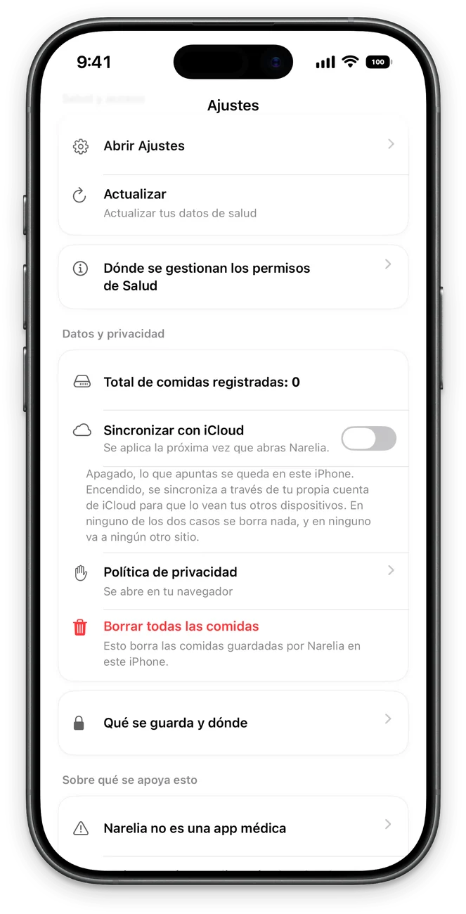
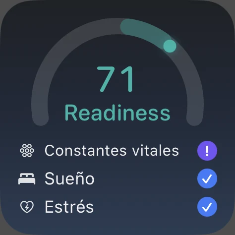
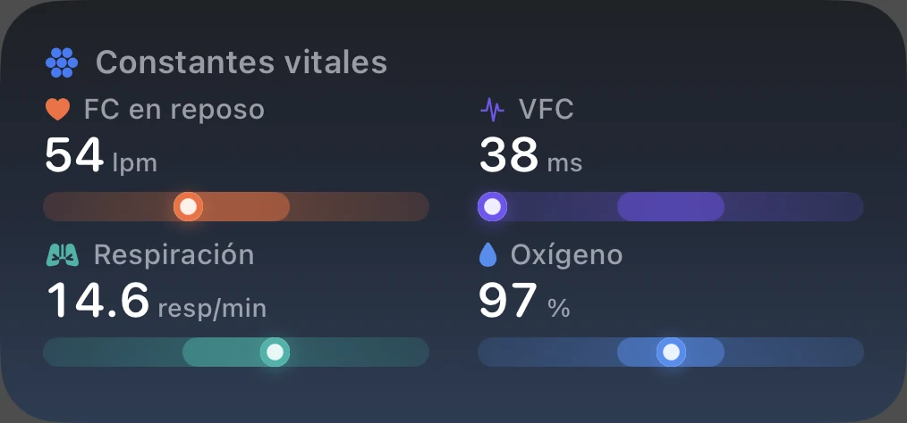

iPhone · Apple Watch · y ahora, Mac
Tus datos, no los de nadie.
Narelia lee tu Apple Watch y te compara contigo, dentro del iPhone y sin cuenta. Y ahora, desde tu Mac, puede llevar tus cifras a la IA que ya usas. Sin un servidor de Narelia de por medio, porque no existe.
La app del iPhone es gratis y sin cuenta, con iOS 26. Se recomienda un Apple Watch.


El camino de tus cifras.
Cuatro paradas, todas tuyas. Lo que tu IA propone vuelve por el mismo camino y espera en el iPhone hasta que dices que sí.
-
Tu iPhone
Narelia calcula todo aquí y escribe sólo las cifras que eliges, cifradas con tu contraseña.
-
Tu carpeta
iCloud Drive › Narelia, en tu propia cuenta. Narelia la crea sola desde el iPhone.
-
Tu Mac
Narelia para Mac abre el fichero con la contraseña que guarda tu Llavero, y lo sirve con narelia-mcp.
-
Tu IA
Claude, Codex, Cursor, OpenClaw… La que ya usas lee tus cifras y puede proponer un registro.
Lo que tu IA pide anotar vuelve al iPhone y no se guarda hasta que lo confirmas allí.
Servidor de Narelia
No existe: no hay cuenta que crear ni copia nuestra de nada tuyo.
La app
Cada cifra, frente a tu propia historia.
Narelia no te compara con una tabla de población. Te compara con tus noches y tus semanas, y dice cuánto se movió cada señal, sin afirmar más de lo que los datos sostienen.
-
Tus cifras, frente a tu propia historia
-
Tu estrés a lo largo del día, y la noche aparte

-
Tu esfuerzo, medido contra tus propias semanas

-
Tus recipientes y tus cantidades rápidas

-
Sin cuenta y sin servidores; iCloud, sólo si lo enciendes

- Readiness
- Parte de tu recuperación de la mañana y se mueve con lo que el reloj mide durante el día. Si dormiste sin el reloj, lo dice: «Sólo de día».
- Recuperación
- Variabilidad, pulso en reposo, respiración y sueño frente a tus propias noches, con lo que movió cada señal.
- Noche, estrés y constantes
- La noche por fases, el estrés a lo largo del día y cada constante sobre su rango personal.
- Forma física
- El esfuerzo de la semana frente a tus semanas habituales, con tus entrenos y tus sesiones de fuerza.
- Comidas con una foto
- Narelia propone qué hay en el plato y tú lo confirmas. Se interpreta dentro del iPhone, con Apple Intelligence en los modelos compatibles.
- Agua y cafeína, en 3D
- Con tu botella, tu taza o tu lata: arrastras el nivel sobre el propio recipiente. También creatina y proteína.
- Siri y Apple Intelligence
- Pregunta por tu variabilidad, tu recuperación o la noche, y contesta como su pantalla, sin red. Atajos ofrece «Obtener datos de Narelia».
- Reloj y widgets
- El Apple Watch tiene su propia app y sus complicaciones; el iPhone, widgets en cuatro estilos.

Nuevo · Narelia para Mac
Tu IA, con tus cifras delante.
- Hoy. Las cifras que escribió tu iPhone, con su semana y tu rango.
- Pendientes. Lo que tu IA ha pedido anotar y espera en el iPhone.
- Conectar con tu IA. 22 apps y agentes; 15 se configuran con un botón.
Con la IA que ya usas.
Apps de chat
Claude Desktop LM Studio AnythingLLM Jan Msty Studio Cherry Studio Chatbox
Agentes
Codex Claude Code Gemini CLI Antigravity OpenCode Goose Hermes Agent OpenClaw Muse Code Copilot CLI Cline
Editores
Cursor VS Code Devin Desktop Zed
Se configura sola, con «Conectar» A mano: Narelia te da lo que hay que pegar
La guía, paso a pasoMás allá de la app.
Readiness, pulso hora a hora, estrés, sueño, constantes, agua y actividad, en la pantalla de inicio, en la de bloqueo y en el Apple Watch. En cuatro estilos: Narelia, Noche, Editorial y Clásico.







Sin cuenta. Sin servidor.
Todo el análisis se hace en tu iPhone. Tus datos viven allí y en la app Salud; la copia en iCloud es opcional, va a tu cuenta y está apagada hasta que la enciendes.
Con tu IA, tú eliges qué cifras ve y cuándo deja de verlas. Quien las recibe es esa IA, con sus propias condiciones: léelas antes de conectarla.
Sin analítica ni identificadores publicitarios. Tus propias cifras nunca quedan detrás de un pago; Narelia Pro suma herramientas como los experimentos guiados, el informe en PDF y Conectar con tu IA. Lee la política de privacidad.
Empieza por el iPhone.
Tus líneas base empiezan a formarse con las primeras noches con el reloj puesto. El Mac y tu IA, cuando quieras.